Create a Databased Testcase
This walkthrough shows you, how to create a Databased Testcase with a manual input table. You will perform the following steps:
- use and edit manual input table
- create a simple REST-Service call
- create variable transfers for the result teststep
- download the result table
Create the Test Definition Hierarchy
- Create a Repository
- Create a Testset
- You have selected a testset
Step 1: Create a Databased Testcase
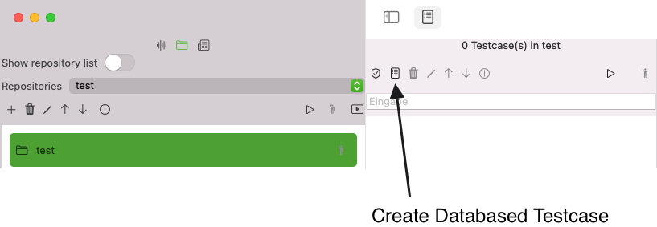
Select the button create new Databased Testcase
This opens a dialog that allows you to enter the name of the teststep. You can choose to enter this name at any point later in time.
(storage/DialogNewDatabasedTestcase.
When you confirm with OK the dialog disappears and creates a new entry in the testcase list. Cancel dismisses without creating the testcase.
When you select the new testcase, you will see two teststeps that were created automatically for you
(storage/DatabasedTestcaseAftercreation.)/>
- The Data Loop Input Teststep that you will use later to enter data.
- The Data Loop Result Teststep that you will use later to set result values.
Step 2: Create a HTTP Teststep
We will create a new HTTP Teststep
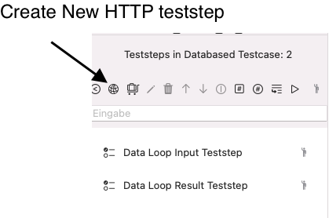
Click on the button Create new HTTP teststep. This will open a dialog where you enter the name Search iTunes and confirm with OK
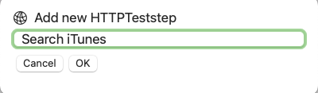
This has created a new HTTP Teststep that will appear at the top of the list.. We will configure this teststep further down in the tutorial.
The Databased Testcase runs all teststeps between the input teststep and output testsep in a loop that is determined by the number of elements in the Input Teststep and limited to the position of the Result Teststep where you may document the results in an exportable table.
This means, we want the new Teststep to be between the Input Teststep and the Result Teststep. The following screenshot shows how you can rearrange selected teststeps with the arrow buttons to move the Search iTunes HTTP Teststep between Input Testsstep and Result Teststep
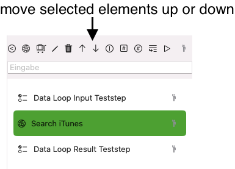
We will use the real-life iTunes Search API.
The documentation of this API is provided here on iTunes Search API Documentation Archive
Please don't understand these screenshots as any kind of endorsement from Apple® for this software.
You may use the following request in an application that wants to retrieve a list of apps. We will use one sample request from the iTuneSearchAPI documentation, and include a limit of five results: To search for applications titled “Yelp” and return only the results from th e United States iTunes Store, use the following URL:
https://itunes.apple.com/search?term=yelp&country=us&entity=software&limit=5
When you use the same request with the same parameters, you may more easily follow the instructions and assertion results used in this tutorial. So even if your favorite app isn't the one mentioned above it's worth using it for this tutorial.
Step 3: Edit the Data Loop Input Teststep
We want to demonstrate the Databased Testcase by providing variations of:
- Limit 1, 2, 3 (As the intention of the Search API is not to help out with our tutorial, we want to limit the search results)
- Country (US, Canada)
- Software (Yelp, Apple)
These variations are sufficient to demonstrate how the Databased Testcase works.
Step 4: Enter the Input teststep data with a manal list
The APIJockey TEST Community Edition allows you to enter test data in an internal table editor. The Apple Appstore Edition allows you the import a CSV-file. As we have few elements only, we will use the manual table editor. Select the Teststep Data Loop Input Teststep and make sure your App shows the same view as in the screenshot below:
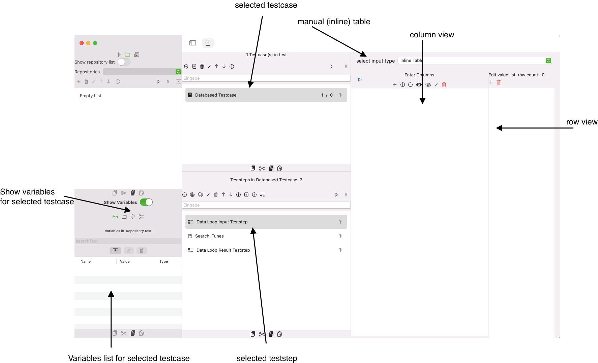
We need to see:
- The variables of the testcase
- The selected Databased Testcase
- The selected Data Loop Input Teststep
- The (empty) columns of the inline table
- The (empty) rows of the inline table
We will create a table with the following columns, according to the variations for the URL that we want to demonstrate:
- Limit
- Country
- Software
The Data Loop Input Teststep we automatically create Variables for us that we can use in the parameter list of our URL To create a column, click the button Add new Column
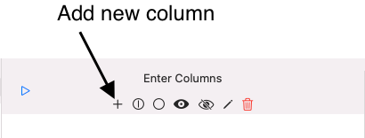
This will open a dialog where you enter the name of the column ( = variable name ) and confirm with OK.
We will create to other columns with the name Country and Software and select the column Software. We should have the following contents:
- We have three columns (Limit, Country, Software)
- We have three variables on the testcase (Limit, Country, Software), the variable link is editable, but we are happy with the default.
- We have not yet any contents for the variables, which we will do next:
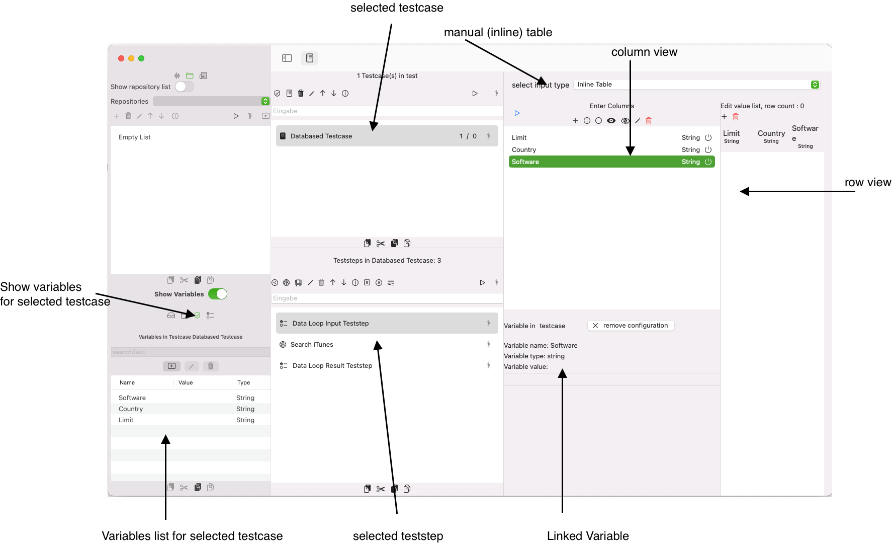
We will create the following new table contents:
| Limit | Country | Softwre |
|---|---|---|
| 1 | US | Apple |
| 2 | CA | Apple |
| 3 | US | Yelp |
After entering the table, select the second row und click the Run Button. this will give the following results: ![Screenshot Databased Testcase DataLoopInputteststep after rows added and run.png)(storage/DatabasedTestcaseDataLoopInputteststepAfterRowsAddedAndRun.png)
With this configuration in place, you can easily create new rows, which is not required for the tutorial. Select a specific row if you want to test manually a specific row.
Step 5: Edit the URL and run the Search iTunes HTTP Teststep
We select the teststep Search iTunes and copy the URL in the URL textfield https://itunes.apple.com/search?term=yelp&country=us&entity=software&limit=5 We can disclose the Sidebar and the Test definition list (Testcase, Teststep) and focus on our current teststep, for now. We run the teststep and will get a JSON Response as in this sceenshot: (storage/DatabasedTestcaseHTTPTeststepWithfixedURL.) ![Databased Testcase HTTPTeststep with fixed URL] Now, we will replace the fixed parameter with variable placeholders:
- old: https://itunes.apple.com/search?term=yelp&country=us&entity=software&limit=5
- new: https://itunes.apple.com/search?term=$(Testcase.Software)&country=$(Testcase.Country)&entity=software&limit=$(Testcase.Limit)
We will see this outcome: 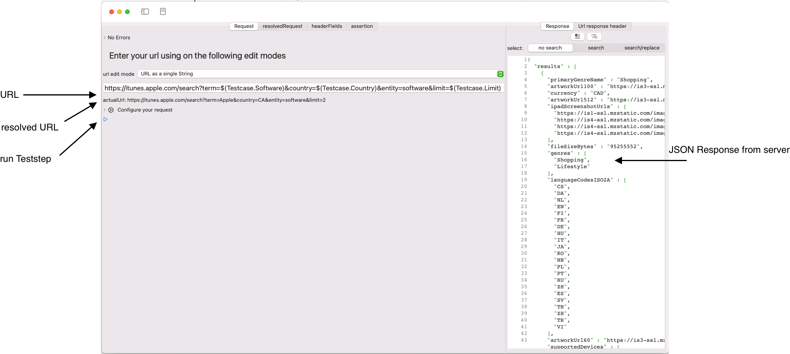
This works, but the URL is hard to edit, you may switch to a different URL edit, like URL with separate list of query parameters
![Databased Testcase HTTPTeststep with variable URL query parameter list.png)(storage/DatabasedTestcaseHTTPTeststepWithVariableURLQueryParameterList.png)
Step 6: Edit and run the DataLoop Result Teststep
We want to store some information from the HTTP request to a result teststep to assess the loop results in table later. This may be any spreadsheet application, such as Numbers or Excel. The approach is, you can use any variable value on the Teststep, Testcase, Testset or Repository and each loop will result in a new row in the result table. This result table can be exported to CSV and thus be imported to large set of external applications. For this tutorial, we would like to store:
- Limit
- Country
- Software
Use may use a Datatransfer Teststep to include further data and access them via their link variables.
We select the DataLoop ResultTeststep as shown below: 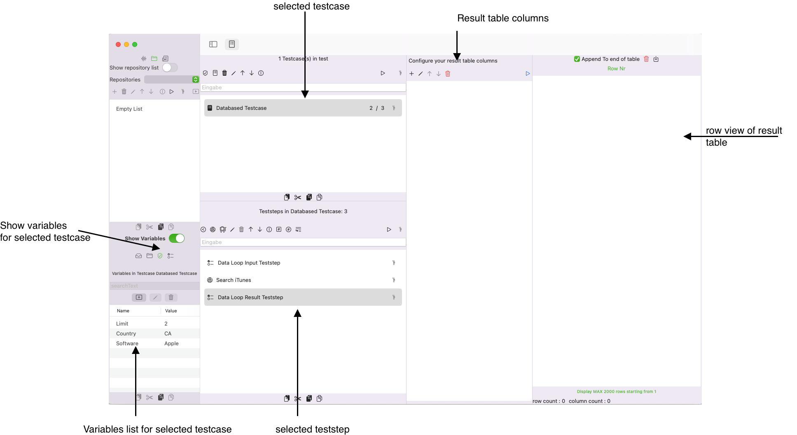
We create the first new column Limit.Click on the button New Column.
This will open a dialog where you can enter the name Limit and confirm with OK.
Select the column, you will see a view where you can link any variable within the current test definition hierarchy (teststep, testcase, testset, repository) to the new column.
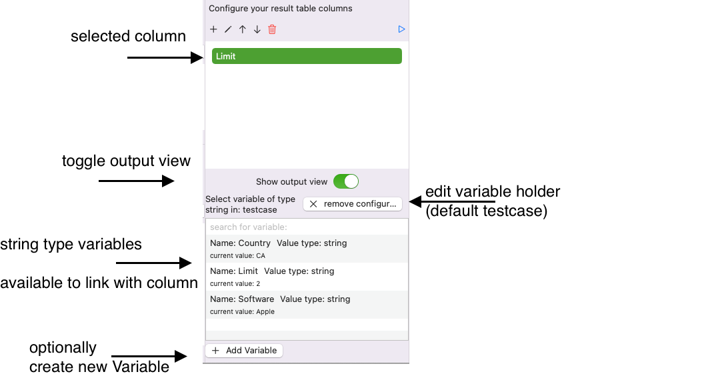
Click on the variable Limit to link this testcase variable to the selected column.This will show the linked variable.
!(storage/DatabasedTestcaseDataLoopResulTeststepColumnLimitOnly.png)
We create two more columns and link them with the existing testcase variables that share their name. This will result in the following column-variable-data, assuming, you had selected the second row in the DataLoopInputTeststep and you pressed the Run button.
| Limit | Country | Software |
|---|---|---|
| 1 | US | Apple |
| 2 | CA | Apple |
| 3 | US | Yelp |
| 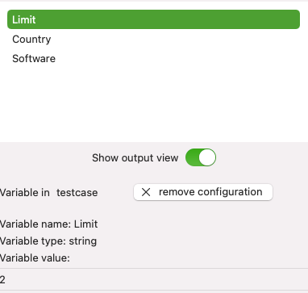 | 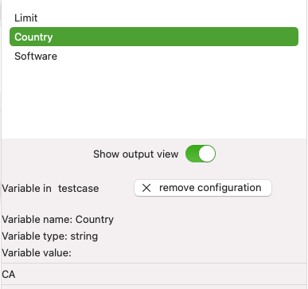 | 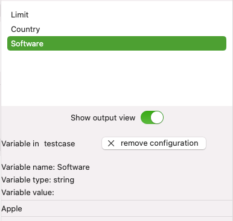 |
Run the Databased Testcase and the DataLoopResultTeststep
When we run this teststep with the Run button, the current set of columns will be added with their linked variable values to the result table. The toggle Append to end of table is set to true. Press (optionally the delete button to remove the result row from the teststep run. We won't do it here.
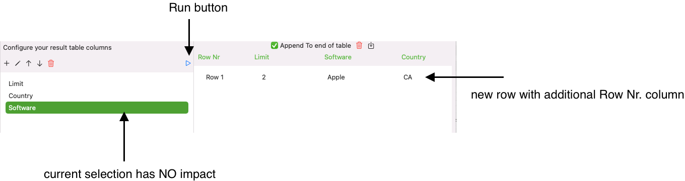
Finally, we will run the DatabasedTestcase itself in the Testcase List View and see how this testcase iterates of the rows of the DataLoopInputTeststep.Make sure, the toggle Append to end of tableis set to true in the result table.
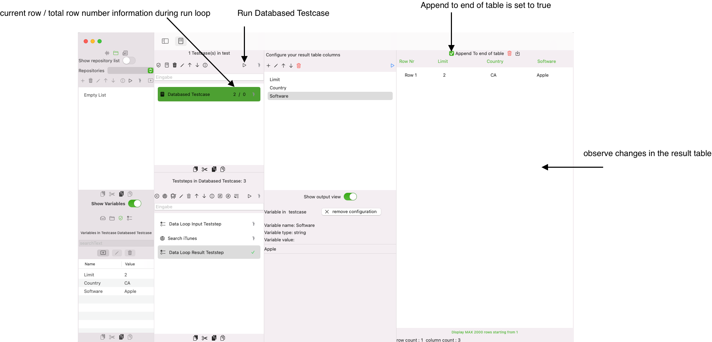
After we click the Run button on the testcase list view with the Databased Testcase selected, we see that the test run iterates of the rows in the input table. Finally, we have three more rows in the result table.
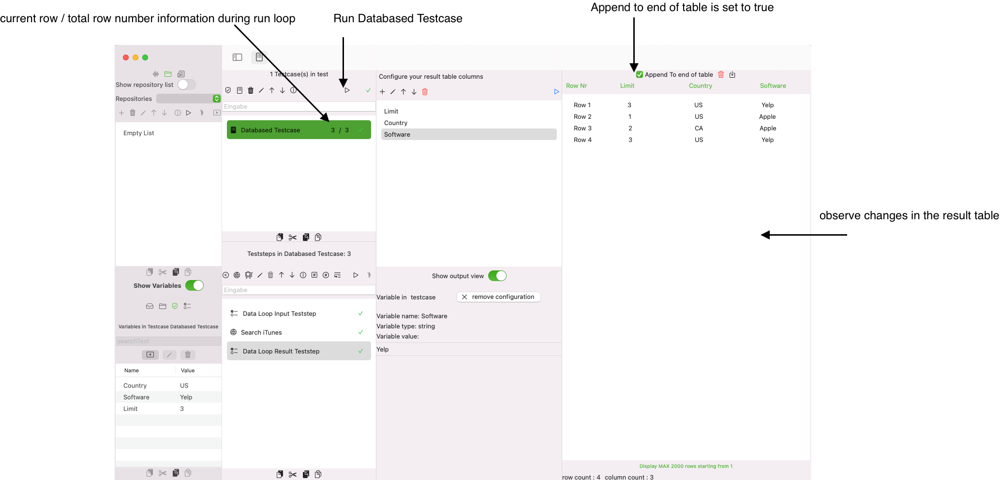
We hope this tutorial was helpful and you enjoy using APIJockey TEST.